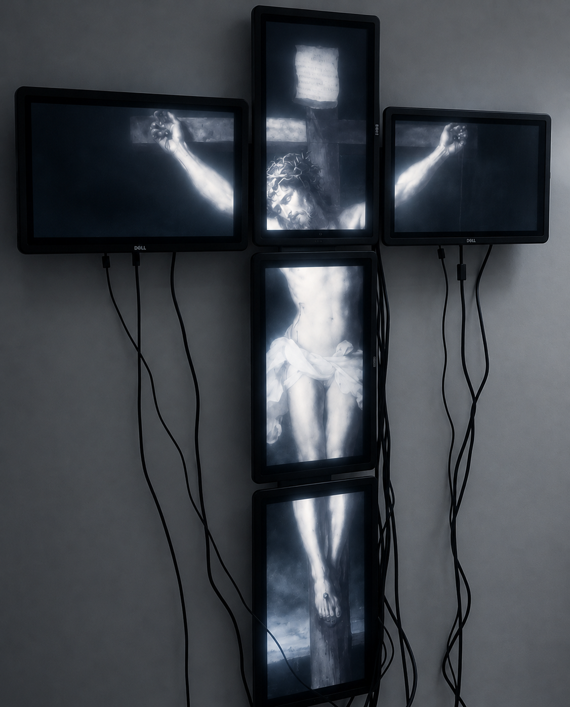
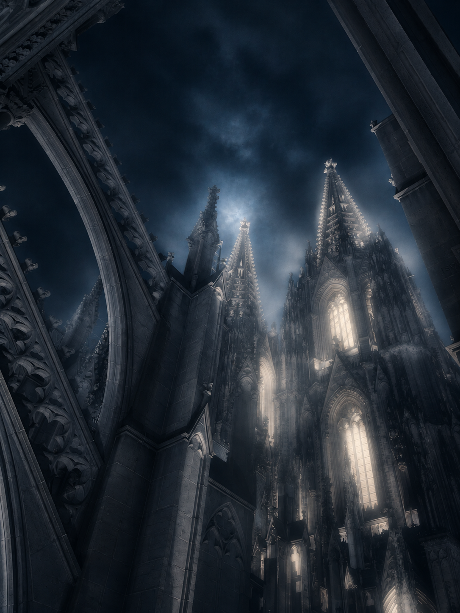

Digital Devotion
A study in fragmented classical art through modern digital displays.
View ProjectA curation of moody imagery and digital architecture. Each project frames light, motion, and deep atmosphere, crafting a visual world well beyond the ordinary.
View All
A study in fragmented classical art through modern digital displays.
View ProjectAn exploration of stillness and cosmic dust over classic marble curves.
View Project
A vision of historic architecture merging into a dramatic, moody sky.
View ProjectAn intimate, fine-art editorial portrait blurring mystery and clarity.
View Project